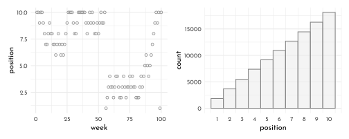
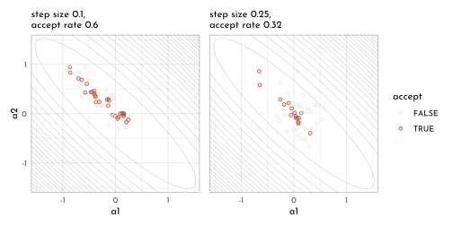
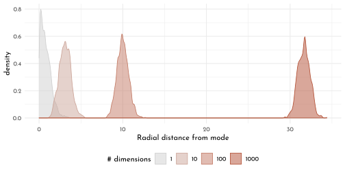
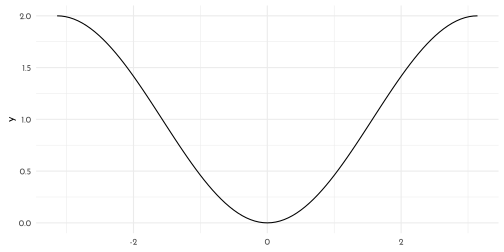
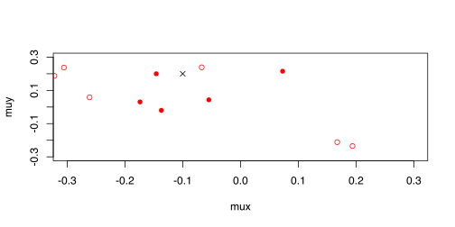

1 Rethinking: Chapter 9
Markov Chain Monte Carlo
by Richard McElreath, building on the Summaries by Solomon Kurz and Jake Thompson.
1.1 The island Kingdom
set.seed(42)
n_weeks <- 1e5
positions <- rep(0, n_weeks)
current <- 10
for( i in seq_along(positions)){
# record the current position
positions[i] <- current
# flip the coin to get the proposal
proposal <- current + sample(c(-1, 1), size = 1)
# connecting the edges to make the archipelago circular
if(proposal == 0){proposal <- 10}
if(proposal == 11){proposal <- 1}
# decide whether to move
prob_move <- proposal/current
current <- ifelse(runif(1) < prob_move, proposal, current)
}
data_markov <- tibble(
week = seq_along(positions),
position = positions)
p1 <- data_markov %>%
filter(week < 101) %>%
ggplot(aes(x = week, y = position)) +
geom_point(shape = 21, color = clr0dd, fill = fll0)
p2 <- data_markov %>%
ggplot(aes(x = position)) +
geom_histogram(breaks = 0:10, color = clr0dd, fill = fll0) +
scale_x_continuous(breaks = .5 + 0:9, labels = 1:10) +
theme(panel.grid.major.x = element_blank())
p1 + p2
1.2 Metropolis algotithms
bivariate distribution “with a strong negative correlation of -0.9”
\[\begin{align*} \begin{bmatrix} \text a_1 \\ \text a_2 \end{bmatrix} & \sim \operatorname{MVNormal} \left (\begin{bmatrix} 0 \\ 0 \end{bmatrix}, \mathbf \Sigma \right) \\ \mathbf \Sigma & = \mathbf{SRS} \\ \mathbf S & = \begin{bmatrix} 0.22 & 0 \\ 0 & 0.22 \end{bmatrix} \\ \mathbf R & = \begin{bmatrix} 1 & -.9 \\ -.9 & 1 \end{bmatrix}, \end{align*}\]
# mean vector
mu <- c(0, 0)
# variance/covariance matrix
sd_a1 <- 0.22
sd_a2 <- 0.22
rho <- -.9
Sigma <- matrix(data = c(sd_a1^2,
rho * sd_a1 * sd_a2,
rho * sd_a1 * sd_a2,
sd_a2^2),
nrow = 2)
# sample from the distribution with the `mvtnorm::rmvnorm()` function
set.seed(9)
my_samples <- mvtnorm::rmvnorm(n = 1e3, mean = mu, sigma = Sigma)# just for demo - not actually used
data.frame(a = my_samples) %>%
as_tibble() %>%
set_names(str_c("a", 1:2)) %>%
summarise(rho = cor(a1, a2))#> # A tibble: 1 x 1
#> rho
#> <dbl>
#> 1 -0.911# define the function
x_y_grid <- function(x_start = -1.6,
x_stop = 1.6,
x_length = 100,
y_start = -1.6,
y_stop = 1.6,
y_length = 100) {
x_domain <- seq(from = x_start, to = x_stop, length.out = x_length)
y_domain <- seq(from = y_start, to = y_stop, length.out = y_length)
x_y_grid_tibble <- tidyr::expand_grid(a1 = x_domain, a2 = y_domain)
return(x_y_grid_tibble)
}
# simulate
contour_plot_dat <- x_y_grid()
contour_plot_dat <- contour_plot_dat %>%
mutate(d = mvtnorm::dmvnorm(as.matrix(contour_plot_dat),
mean = mu, sigma = Sigma))p0 <- contour_plot_dat %>%
ggplot() +
geom_contour(aes(x = a1, y = a2, z = d),
size = 1/8, color = clr_dark,
breaks = 9^(-(10 * 1:25))) +
scale_x_continuous(expand = c(0, 0)) +
scale_y_continuous(expand = c(0, 0)) +
scale_shape_manual(values = c(21, 19)) +
scale_color_manual(values = c(`FALSE` = clr0, `TRUE` = clr2)) +
theme(panel.border = element_rect(color = clr_dark, fill = "transparent"))
metropolis <- function(num_proposals = 50,
step_size = 0.1,
starting_point = c(-1, 1),
seed = 42) {
set.seed(seed)
# Initialize vectors where we will keep track of relevant
candidate_x_history <- rep(-Inf, num_proposals)
candidate_y_history <- rep(-Inf, num_proposals)
did_move_history <- rep(FALSE, num_proposals)
# Prepare to begin the algorithm...
current_point <- starting_point
for(i in 1:num_proposals) {
# "Proposals are generated by adding random Gaussian noise
# to each parameter"
noise <- rnorm(n = 2, mean = 0, sd = step_size)
candidate_point <- current_point + noise
# store coordinates of the proposal point
candidate_x_history[i] <- candidate_point[1]
candidate_y_history[i] <- candidate_point[2]
# evaluate the density of our posterior at the proposal point
candidate_prob <- mvtnorm::dmvnorm(candidate_point, mean = mu, sigma = Sigma)
# evaluate the density of our posterior at the current point
current_prob <- mvtnorm::dmvnorm(current_point, mean = mu, sigma = Sigma)
# Decide whether or not we should move to the candidate point
acceptance_ratio <- candidate_prob / current_prob
should_move <- ifelse(runif(n = 1) < acceptance_ratio, TRUE, FALSE)
# Keep track of the decision
did_move_history[i] <- should_move
# Move if necessary
if(should_move) {
current_point <- candidate_point
}
}
# once the loop is complete, store the relevant results in a tibble
results <- tibble::tibble(
candidate_x = candidate_x_history,
candidate_y = candidate_y_history,
accept = did_move_history
)
# compute the "acceptance rate" by dividing the total number of "moves"
# by the total number of proposals
number_of_moves <- results %>% dplyr::pull(accept) %>% sum(.)
acceptance_rate <- number_of_moves/num_proposals
return(list(results = results, acceptance_rate = acceptance_rate))
}
round_1 <- metropolis(num_proposals = 50,
step_size = 0.1,
starting_point = c(-1,1))
round_2 <- metropolis(num_proposals = 50,
step_size = 0.25,
starting_point = c(-1,1))
p1 <- p0 +
geom_point(data = round_1$results,
mapping = aes(x = candidate_x, y = candidate_y,
color = accept, fill = after_scale(clr_alpha(color,.2))), shape = 21) +
labs(subtitle = str_c("step size 0.1,\naccept rate ",
round_1$acceptance_rate), x = "a1")
p2 <- p0 +
geom_point(data = round_2$results,
mapping = aes(x = candidate_x, y = candidate_y,
color = accept, fill = after_scale(clr_alpha(color,.2))), shape = 21) +
scale_y_continuous(NULL, breaks = NULL, expand = c(0, 0)) +
labs(subtitle = str_c("step size 0.25,\naccept rate ",
round_2$acceptance_rate), x = "a1")
p1 + p2 + plot_layout(guides = "collect")
concentration_sim <- function(dimensions = 1, t = 1e3, seed = 42) {
set.seed(seed)
y <- rethinking::rmvnorm(t, rep(0, dimensions), diag(dimensions))
rad_dist <- function(y) sqrt(sum(y^2))
rd <- sapply(1:t, function(i) rad_dist( y[i, ]))
}
data_concentration <- tibble(dimensions = c(1, 10, 100, 1000)) %>%
mutate(con = map(dimensions, concentration_sim)) %>%
unnest(con) %>%
mutate(`# dimensions` = factor(dimensions))
data_concentration %>%
ggplot(aes(x = con, fill = `# dimensions`)) +
geom_density(size = .4, adjust = .6,
aes(color = after_scale(clr_alpha(fill, 1)))) +
scale_fill_manual(values = scales::colour_ramp(colors = c(clr0d, clr2) %>% clr_alpha())((0:3)/3)) +
xlab("Radial distance from mode") +
theme(legend.position = "bottom")
1.3 Hamiltonian Monte Carlo
ggplot() +
stat_function(fun = function(x){-cos(x) + 1 },xlim = c(-pi, pi))
U <- function( q, a = 0, b = 1, k = 0, d = 1){
mux <- q[1]
muy <- q[2]
U <- sum( dnorm(y , muy, 1, log = TRUE)) + sum( dnorm(x , mux, 1, log = TRUE)) +
dnorm(muy, a, b, log = TRUE) + dnorm(mux, k, d, log = TRUE)
return(-U)
}
U_gradient <- function(
q , a = 0, b = 1, k = 0, d = 1){
mux <- q[1]
muy <- q[2]
G1 <- sum( y - muy ) + (a - muy) / b ^ 2 # dU/dmuy
G2 <- sum( x - mux ) + (a - mux) / b ^ 2 # dU/dmux
return(c(-G1, -G2)) # negative because energy is neg-log-prob
}library(shape)
library(rethinking)
set.seed(7)
y <- rnorm(50)
x <- rnorm(50)
x <- as.numeric(scale(x))
y <- as.numeric(scale(y))
Q <- list()
Q$q <- c(-.1,.2)
pr <- .3
plot(NULL, ylab = "muy", xlab = "mux", xlim = c(-pr, pr), ylim = c(-pr, pr))
step <- .03
L <- 11 # .03 / 28, for U turns
n_samples <- 40
path_col <- clr_alpha("black",.5)
points(Q$q[1], Q$q[2], pch = 4, col = "black")
for(i in 1:n_samples){
Q <- HMC2(U, U_gradient, step, L, Q$q)
if(n_samples < 10){
for(j in 1:L){
K0 <- sum(Q$ptraj[j,] ^ 2) # kinetic energy
lines( Q$traj[j:(j+1), 1], Q$ltraj[j:(j+1), 2], col = path_col, lwd = 1 + 2 * K0)
}
points( Q$traj[1:L+1,], pch = 16, col = "grey10", cex = .35)
Arrows( Q$traj[L, 1], Q$traj[L, 2], Q$traj[L+1, 1], Q$traj[L+1, 2],
arr.length = .35, arr.adj = .7)
text( Q$traj[L+1, 1], Q$traj[L+1, 2], i, cex = .8, pos = 4, offset = .4 )
}
points(Q$traj[L+1, 1], Q$traj[L+1, 2], pch = ifelse(Q$accept == 1, 16, 1 ),
col = ifelse(abs(Q$dH) > .1, "red", "black"))
}
library(rlang)
chapter9_models <- env(
)
write_rds(chapter9_models, "envs/chapter9_models.rds")1.4 Homework
E1
E2
E3
E4
M1
M2
M3
M4
M5
M6
H1
H2
H3
H4
H5
1.5 {brms} section
1.6 pymc3 section
×